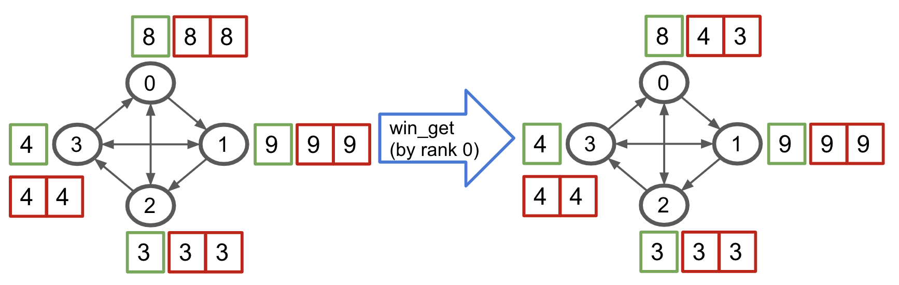
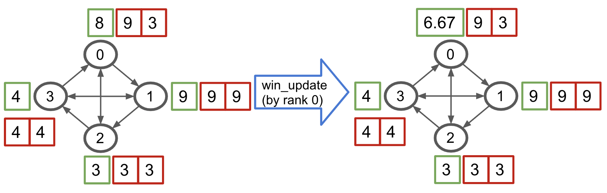

Bluefog Operations Explanation¶
The implementation of bluefog operations is built upon the MPI APIs. The naming of communication operations are all derived from MPI. However, our usage and definition are slightly different from the MPI since the focus of bluefog ops are highly associated with the virtual topology of network.
The communication ops that bluefog supported can be catogorized into three types:
Collective Ops:
broadcast,allreduce,allgather.Neighbor Collective Ops:
neighbor_allreduce,neighbor_allgather.Hierarchical Collective Ops:
hierarchical_local_allreduce,hierarchical_neighbor_allreduce.One-sided Communication Ops:
win_create,win_free,win_put,win_get,win_accumulate,win_update,win_update_then_collect.
We use figure to illustrate all those ops with similar style as in MPI tutorials blog. In the figure, we use circle to represent one process, which is exchangeablely called node, agent, host, etc. under some circumstance, and use green and red square to represent the data or tensor while orange square for one machine. The number inside of circle is the rank of that process and th number inside of square is the value of data. If you need more background information about MPI, we recommend this nice tutorial.
Collective Ops¶
These three broadcast, allreduce, allgather ops are most basic collective MPI ops.
The bluefog implementation is almost exactly the same as the MPI definition. One small difference
is allreduce only support average and summation since bluefog focused on the numerical calculation only.
allgather¶

allreduce¶

broadcast¶

Neighbor Colletive Ops¶
Similar to their collective ops cousins, the behavior of neighbor collective ops is very similar, except that their behavior is determined by the virtual topology as well. Loosenly speaking, allreduce and allgather are the same as running the neighbor_allreduce and neighbor_allgather over fully connected network. In the figure, we use the arrowed line to represent the connection of virtual topology (notice it is the directed graph.)
{kind=link}
{kind=link}
Hierarchical Collective Ops¶
In practice, the communication speed and behavior is different between intra-machine and inter-machine communcation. Hence, we also provided two hierarchical collective ops. The basic unit in this case is each (physical) machine. Hence, unlike previous neighbor collective ops, of which the topology is defined over the connection between ranks/processes, the topology of hierarchical collective ops is defined over the connection between machines.
hierarchical_local_allreduce¶

Because it is (machine) local operation, the topology definition will not impact this operation. Hence, the rank 0 and rank 1 simply applied the local allreduce average to get (8+4)/2 = 6. Other ranks is like-wise.
hierarchical_neighbor_allreduce¶

Similar to the hierarchical_local_allreduce operation, it first applied the local allreduce average within the machine. So that in the view of external machines, all processes within same machine forms a super node. Then, the super node exchange the information with their neighbor machines like neighbor_allreduce. For example, machine 0, 2, and 3 first formed a local average value 6, 3, and 3 respectively. Then, a machine-wise neighbor allreduce produce (6+3+3)/3 = 4.
In order to minimize the cross machines communcation, the real implementation is four steps actually: 1. Local Average. 2. All local rank 0 processes do the neihbor_allreduce. 3. local rank 0 processes broadcast the received tensors to other local ranks. 4. Compute the average of received neighbor tensors within the process.
Warning
hierarchical_neighbor_allreduce should be used under the homogeneous environment only, i.e., each machine owns same number of the local processes.
One-sided Communication Ops¶
One-sided communication ops is introduced after MPI-2. The most notable feature of one-sided communication is indicated by the name that allows the communication ops of one process to be decoupled from the behavior of another process. Bluefog heavily relies on this feature to build the asynchronous algorithm. Except the win_create and win_free are the collective ops, all rest ops only need to be called by one process. Here is a nice introduction for the MPI one-sided communication ops. As mentioned before, please note the usage and definition of Bluefog is slightly different from MPI standard.
win_create¶
Win create is always the first step to use the one-sided communication. After this call, each process will allocate the number of incoming neighbor’s windows as buffer, which is illustrated in the figure as red square. Each buffer is dedicated to one neighbor. You don’t need to know which one is dedicated to which neighbor because these buffers are invisible to the python frontend. The only way to interact with them is through the win_update.

win_free¶

Note
In the following figures, we only show the behavior of win_put/get/accumulate/sync to all neighbors with no weights. Actually, you are allowed to customize which neighbor to send/receive and assign any weight on tensor. Please check our API doc to see how to use it.
win_put¶
Win_put is one of three main methods to exchange the information between the processes in window. By default, it will put its own tensor value into all outgoing neighbor’s buffer. Note it doesn’t need the receiver to do anything.

win_get¶
Win_get is one of three main methods to exchange the information between the processes in window. By default, it will get (fetch) the incoming neighbor’s local value into the its own buffer. Note it doesn’t need the sender to do anything.
{kind=link}
win_accumulate¶
Win_accumulate is one of three main methods to exchange the information between the processes in window. By default, it will accumulate its own tensor value into all outgoing neighbor’s buffer, i.e. sum up. Note it doesn’t need the receiver to do anything.

win_update¶
win_update is the bridge to connect the value of buffers (corresponding to the neighbor value) with the local value. It has two functionalities. One is to update the buffer to make sure that the neighbor value, which may be changed through win_put, win_get, and/or win_accumulate, is synchronized and visible to local memory. Another is it updates the local value to the average of self and neighbor’s value.
{kind=link}
win_update_then_collect¶